Can socio-economic indicators predict suicide rates?
The notebook machine_learning_analysis.ipynb trained five kinds of model on World Bank indicators. Only 58 countries had every indicator, so models were trained on about 40 and tested on 15–18.
Re-analysis: cross-validated on all countries
The original evaluation dropped every country with a missing indicator (183 → 58) and scored each model on one small test split. Here the indicators — plus alcohol, health spending and World Bank region — are evaluated on all 185 countries (2017–2019 averages) with median imputation and 10 × 5-fold cross-validation.
| Model | Cross-validated R² (mean ± sd) |
|---|
Original analysis · data preprocessing & correlation
Before modelling, the data were cleaned, normalised and examined for correlations with the suicide mortality rate. The team reported a positive association with social-insurance coverage and a negative association with the basic-education labour-force indicator — which measures how many people with only basic education are working, not the workforce's education level. On 2000–2021 data the labour-force link holds after controlling for region, while the social-insurance link is unstable (coverage data exist for only 45–64 countries; see the overview).
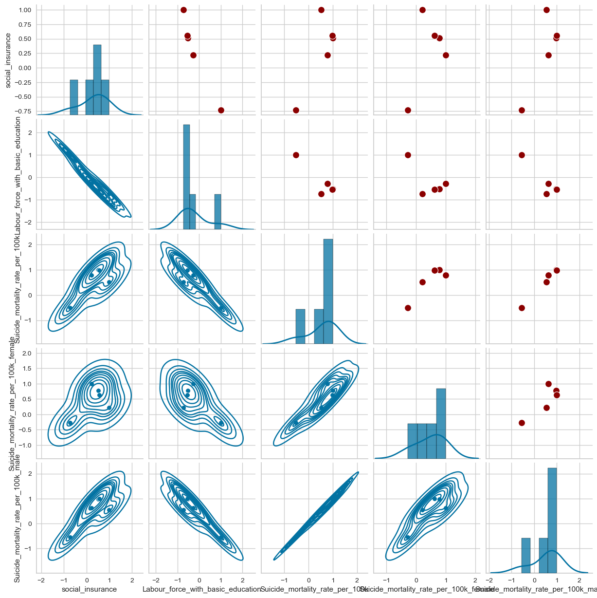
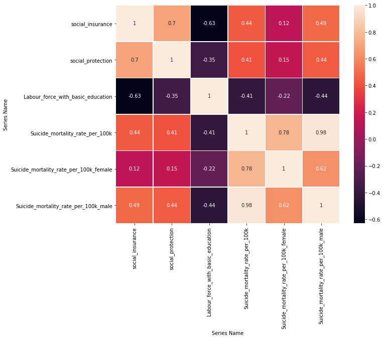
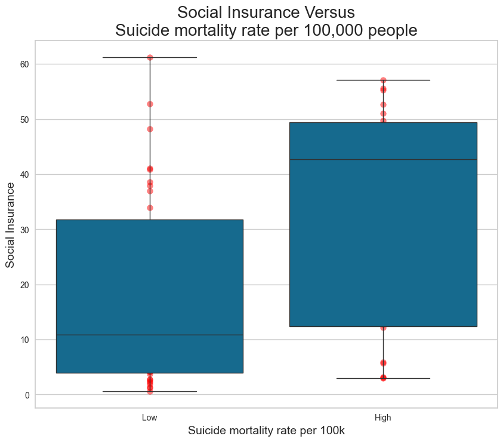
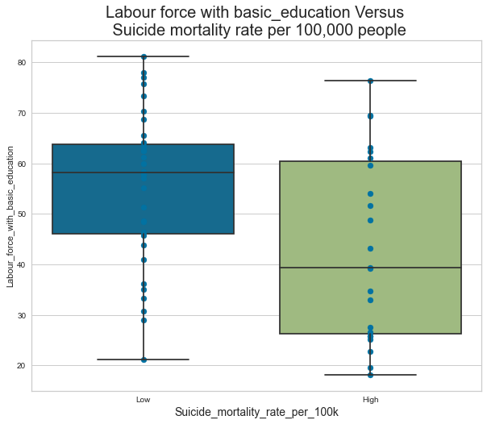
1 · Regression: predicting the rate
R² is the share of variation explained; a negative test R² means the model does worse on new countries than simply predicting the average.
| Model | Train R² | Test R² |
|---|
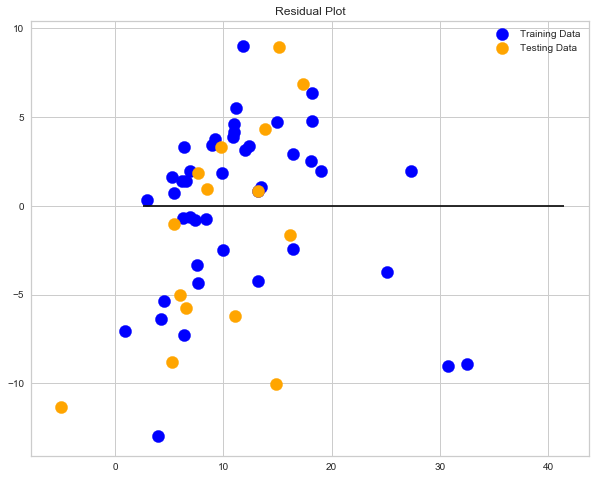
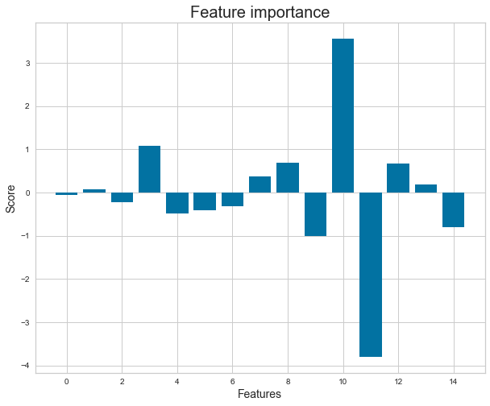
2 · Classification: high or low?
Countries above the mean (11.5 per 100,000) were labelled high. Test accuracy is on 18 held-out countries; cross-validated accuracy is the mean ± standard deviation across folds.
| Model | Train | Test | Cross-validated | F1 (high) |
|---|
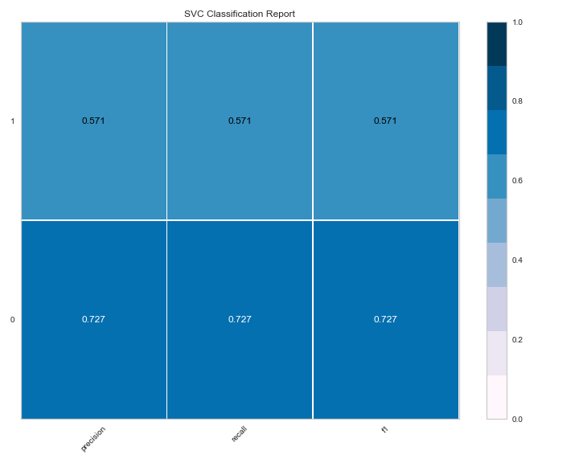
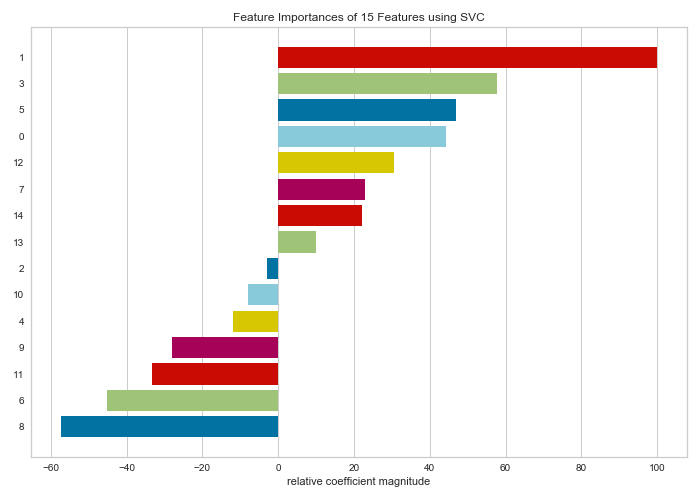
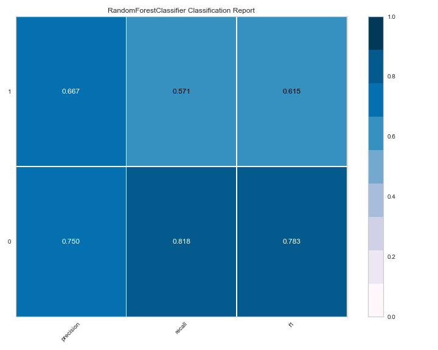
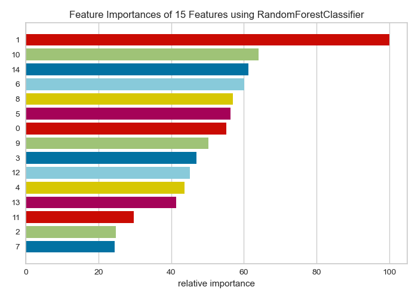
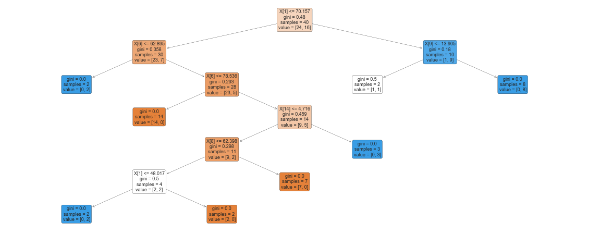
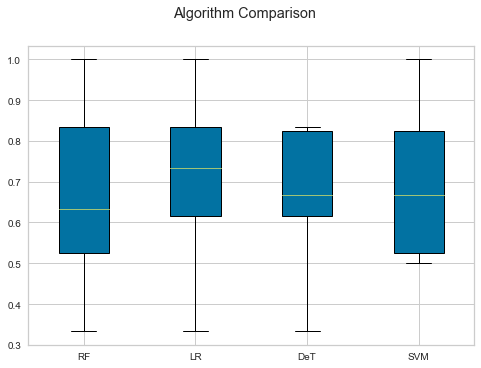
What this means
- Overfitting
Trees and forests scored 98–100% on training countries but 61–72% on new ones — they memorised the 40 training countries.
- Barely above a naive guess
Always predicting "low" scores 61% on the test set; the best models add about 11 points, and cross-validation varies by ±18–24 points, so the difference isn't reliable.
- Too little data
Requiring every indicator cut 183 countries to 58. Imputation, fewer features, or regional controls would be better next steps than more complex models.
- The useful output is descriptive
The indicator correlations show which patterns exist; they can inform where prevention resources are studied further, not predict outcomes.